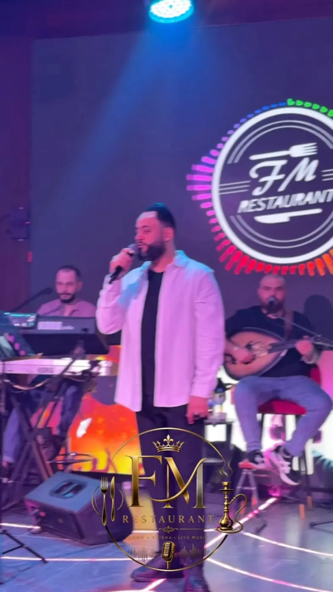
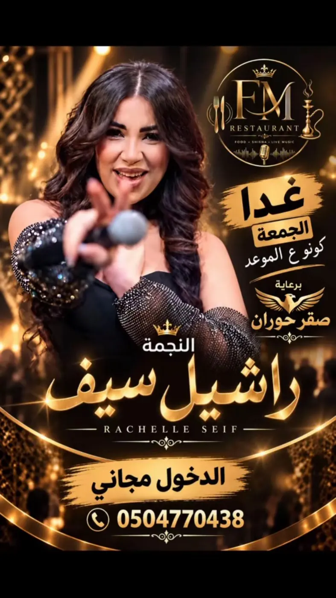
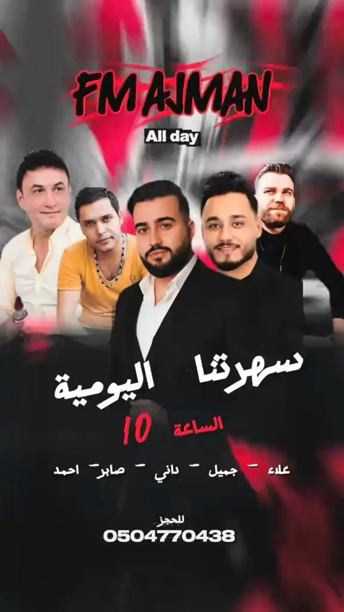
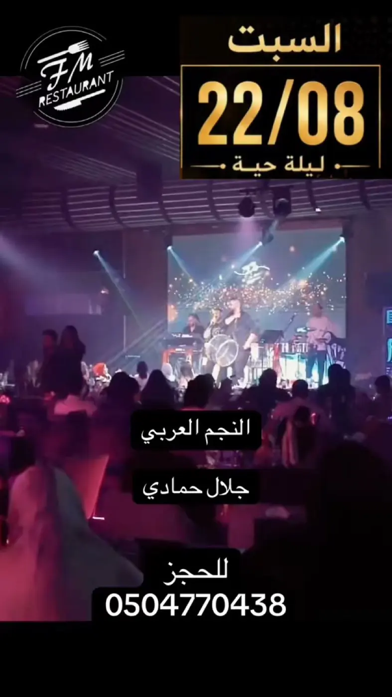
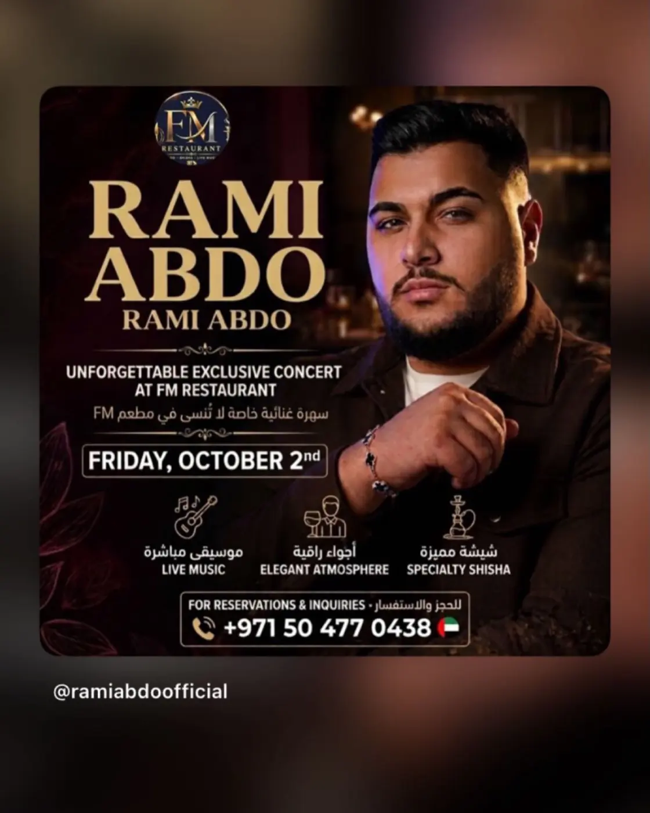
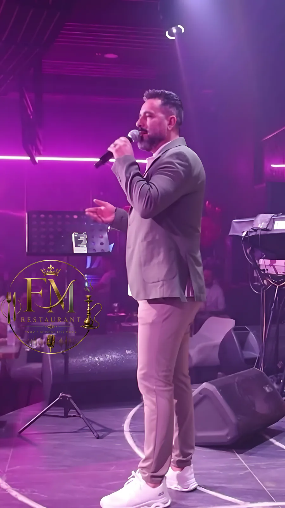

A restaurant and cafe on Ajman Corniche. Food, shisha and live Arabic music every night.
We've been on the Gulf shore in Ajman since 2009. The night starts at 10, and on Fridays and Saturdays Arab singers take our stage.



From our Instagram @fmresturantcafe
Recently on the FM stage
Recent nights
A new name most weeks. These are the posters from our latest nights; the next ones go up on Instagram first.




Want to know who's on this week? Ask us on WhatsApp →
The night starts at ten
There's music every night. A band on stage, oud, keys and percussion, and the whole room in stage light.
Fridays and Saturdays are bigger. Arab singers are our guests on stage, and some nights entry is free. Book your table ahead.


Food and shisha, breakfast to late
Middle Eastern kitchen
We're a restaurant before we're a night out. Order at your table while the night goes on.
Breakfast and lunch offers
Good morning from FM: we run breakfast and lunch offers. Ask us what today's is.
Specialty shisha
With the music at night or an afternoon sit-down.

On the Gulf shore in Ajman
We opened in 2009 on Ajman Corniche, on Sheikh Humaid Bin Rashid Al Nuaimi Street. Food and shisha by day, the hall and the stage at night.
Reservations and questions
050 477 0438A table for tonight, or who's singing this week. Message us on WhatsApp and we'll get back to you.
Find us
33/1 Sheikh Humaid Bin Rashid Al Nuaimi Street, Al Rumaila 2, Ajman
On Ajman Corniche.
- Open
- All day
- Live music
- Every night from 10pm
- Bookings
- 050 477 0438